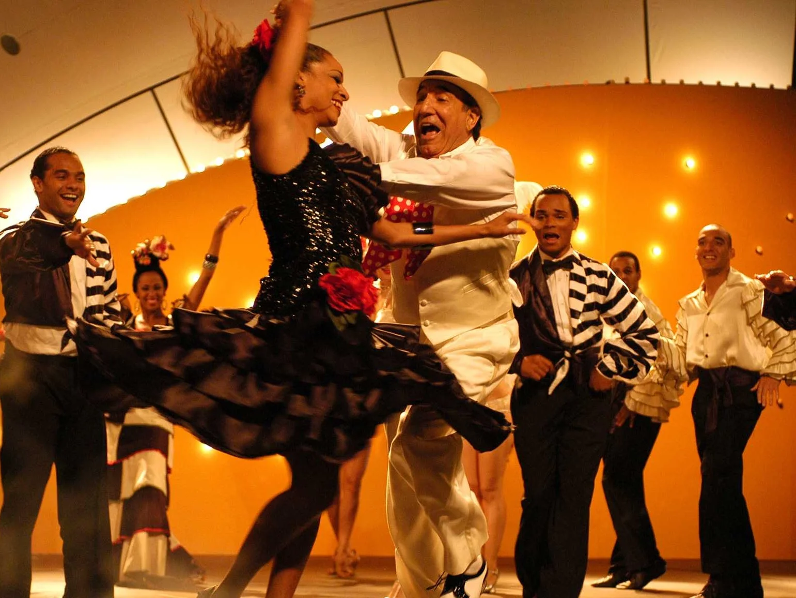
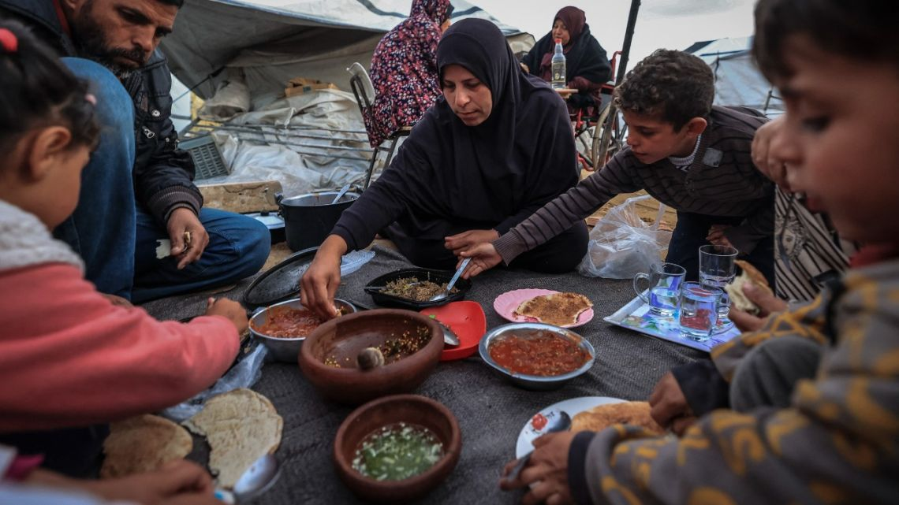

Folklore is the body of traditions, legends, myths, beliefs, festivals, dances, and customs of a people—manifestations of popular culture that characterize their social identity. The word derives from the English folklore (from folk, meaning "people," and lore, meaning "knowledge" or "learning"). It represents the cultural identity of a community, transmitted orally from generation to generation.
The main difference between mythology and folklore is that mythology is a system of religious or sacred narratives focused on explaining the creation of the world, gods, and natural phenomena. Folklore is much broader, encompassing a culture's entire body of traditional knowledge, including myths, festivals,

dances, superstitions, and songs. Furthermore, folklore is more organic—adapted by the people and generally passed down from generation to generation—whereas mythology is more akin to a religion and can be transmitted in various ways.Each nation possesses a unique folklore, yet cultures that are geographically or historically close share a common body of lore; furthermore, there are legends—such as the "Woman in White," who embodies the fear of death—that appear in different versions across virtually all folklore traditions.
Europe
German Folklore
It is a rich body of traditions, legends, and folktales that includes classic stories by the Brothers Grimm, as well as myths about dark forests and mystical beings. Works inspired by German folklore include Once Upon a Time, Harry Potter, Tangled, Pokémon, etc.
Italian Folklore
Heavily influenced by Christianity (especially regarding demonology), but also featuring many fairy tales. Works inspired by Italian folklore include Luca, Pinocchio, The Godfather, Gladiator, etc.
Icelandic Folklore
A rich blend of Norse mythology, magical creatures, and cautionary tales shaped by the island's harsh volcanic and glacial landscape. Works inspired by Icelandic folklore: Frozen, Game of Thrones, Star Wars, etc.
Polish Folklore
One of the most well-preserved cultural traditions, it is a blend of ancient Slavic myths, medieval legends, and rural customs. Works inspired by Polish folklore include The Chronicles of Narnia, The Witcher, Midsommar, Hellboy, etc.
Dutch Folklore
Spanning the epics, legends, fairy tales, and oral traditions of the peoples of Belgium, the Netherlands, and Luxembourg (Benelux), many tales focus on the region's canals and windmills, while also reflecting the Celtic belief in the sacredness of trees. Works inspired by Dutch folklore include The Chronicles of Narnia, Pokémon, Peter Pan, Frankenstein, and others.
Russian Folklore
It has its roots in the pagan beliefs of the ancient Slavs; bylinas (Russian oral epic poems) were a fundamental element, alongside customs such as holiday rituals, amulets, and folk magic. Works inspired by Russian folklore include Spirited Away, Rise of the Guardians, Corpse Bride, One Piece, John Wick, etc.
Asia
Mongolian Folklore
It possesses a rich and complex tapestry of spiritual beliefs shaped by centuries of nomadic culture, shamanic traditions, and interactions with neighboring civilizations. Its belief system intertwines ancient animist practices, shamanism, and later Buddhist influences. Works inspired by Mongolian folklore include Dune, Mulan, Avatar Legends, etc.
Indonesian Folklore
Characterized by a vast number of ethnic groups, it tends toward syncretism. Works inspired by Indonesian folklore include The Conjuring, Eat Pray Love, The Last of Us, etc.
Cambodian Folklore
It blends local Khmer beliefs, Buddhism, and ancient Indian tales, focusing on nature spirits, sacred dances, and festivals for the dead. Works inspired by Cambodian folklore include Lara Croft, King Kong, Raya and the Last Dragon, etc.
Kyrgyz Folklore
A legacy of Central Asian nomadic traditions, distinguished by three main pillars: the monumental Epic of Manas, the art of traditional bards (Manaschis), and nature-related legends. Works inspired by Kyrgyz folklore include Vikings, Avatar, The Hobbit, etc.
Yemeni Folklore
Ancient legends, oral poetry, and community traditions—notably myths about djinns (genies or demons), the oral transmission of stories during social gatherings, and a strong cultural heritage linked to a history spanning millennia on the Arabian Peninsula. Works inspired by Yemeni folklore include Star Wars, Iron Man, Aladdin, etc.
Africa
Swahili Folklore
A rich oral and cultural tradition of the peoples of Africa's east coast, distinguished by maritime legends, trickster animal tales, and strong Islamic and Arab influences. Works inspired by Swahili folklore include Black Panther, Love, Death & Robots, The Lion KIng, etc.
Ethiopian Folklore
Influences from Judaism, Christianity, and Islam, as well as traditional local folklore—which combines elements from the Kingdom of Abyssinia, ancient Yemen, and the Kingdom of Solomon the Wise. Works inspired by Ethiopian folklore: The Lion King, Indiana Jones, Lucifer, etc.
Americas
U.S. American Folklore
It encompasses legends, folktales, and myths formed by a blend of Indigenous, European, and African traditions; for obvious reasons, it is the folklore that most influences Hollywood. Works inspired by Russian folklore include Supernatural, Pocahontas, Stranger Things, The X-Files, WandaVision, Hocus Pocus, I Know What You Did Last Summer, etc.
Caribbean Folklore
It was shaped by a history marked by violence, colonialism, slavery, and multicultural influences—specifically, influences from African, Creole, Asian, Native American, European, and Indian cultures. Works inspired by Caribbean folklore include Pirates of the Caribbean, American Horror Story, Black Panther, 007, The Princess and the Frog, Outer Banks, etc.
Oceania
Australian Folklore
Australian Aboriginal myths and Australian colonial and contemporary folklore, particularly relating to the Outback. Works inspired by Australian folklore: Mako Mermaids, Mad Max, Godzilla, H2O: Just Add Water, etc.